Lecture 15 Workbook
This workbook holds the notes and the questions for Lecture 15. Each section starts with notes that explain everything on the slides, and a little more. Answer the questions as we discuss the slides. Sections 4 and 9 are the transit card problem in two parts, to do at home as practice. Section 11 has two complete programs to read, run and extend after class. By the end, you should be able to:
- distinguish a syntax error from a logical error;
- choose positive, negative and boundary test cases;
- write assertions and repeatable test programs with a known starting state;
- follow a call sequence in a state table and find its first wrong row;
- repair a cause and keep a regression test; and
- write complete programs that test and trace objects whose state changes.
1. Testing
The wrong receipt
A customer orders coffee, a muffin and a cookie. Their prices are 250, 325 and 175 cents. The receipt lists all three items, but reports a total of 575. The expected total is 750. The program compiled and ran; that did not check its calculation. A logical error lets the program compile and run, but gives the wrong behaviour.
A syntax error breaks a rule of the language. For example, a missing semicolon can stop a class from compiling. The compiler reports the problem it finds. A legal addition or comparison can still implement the wrong rule, so the compiler cannot tell us whether the receipt charges the right amount.
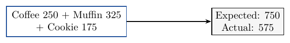
Testing and debugging
Testing checks whether code produces the intended behaviour. Debugging finds and fixes the cause of an error. Comparing the returned total with 750 tests this order. Following the calculation to find the missing cookie branch is debugging. A wrong printed value is a symptom; the line that caused it may be elsewhere.
The improved cafe classes return totals and receipt text. A test can call getTotal and compare the returned int with an expected value. Small methods and private fields limit the code we need to inspect. Useful comments and consistent indentation also help us follow assignments. These design choices reduce mistakes, but tests are still needed.
Practice
1.1 Classify each problem as a syntax error or a logical error: a method declaration has a missing closing parenthesis; a loop that compiles and runs leaves one ordered item out of the total. Say how each problem can be detected.
1.2 A check finds that the receipt total differs from 750. A programmer then follows the calculation and finds the omitted branch. Which activity is testing and which is debugging? Explain the difference in what each establishes.
2. Test cases
Starting state and expected results
A test case gives the starting state, the inputs and the expected result. The same call can mean different things on different objects. Adding a muffin to an empty order differs from adding it to an order that already has coffee. Write down the expected result before running. Use the prices and the method's promise, rather than copying the program's answer.
A unit test checks one method or class at a time. We can check Order.getTotal() without printing a receipt. Any compiled method can be tested, so begin while its purpose is clear. The cafe examples use non-null customers and items, non-negative prices, and totals that fit in an int.
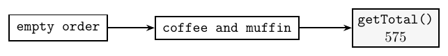
Assertions
An assertion states a condition that a test expects to be true. Our ordinary Java helpers have these meanings: assertEquals(label, expected, actual) compares two ints; assertTrue(label, condition) checks a boolean. They print PASS or FAIL with the label. A failed check increases a failure count, and later checks still run. These are method calls, not new syntax.
assertEquals("order total", 575, order.getTotal());
assertTrue("paid order", order.getTotal() > 0);The first assertion checks an exact amount. The second checks only that the amount is positive, so it would accept many wrong totals. Choose a condition that tests the promise you care about. A label should identify the claim so a failure can be found in the output.
Practice
2.1 Specify a test case for an order containing one tea and one cookie. Give its starting state, its inputs and the expected value of getTotal().
2.2 An Order order contains two coffees. Write one exact integer assertion, with a useful label, for its total.
Use the label "two coffees" in this answer box.
| Assertion |
|---|
2.3 A programmer runs a method, sees 575, and then writes 575 as the expected result. Why can this accept a mistake? What information should determine the expected value?
3. Edges
Successes, refusals and boundaries
A positive test checks a case that should succeed. A negative test checks that an invalid operation is refused in the specified way. A boundary test checks an edge and values just inside or outside it. These categories can overlap. A tap with exactly the fare should succeed, so it is both a positive case and a boundary case.
For a fare of 250, use balances 249, 250 and 251. The first must be refused; the other two must be accepted. Test the returned result and the resulting balance. For a negative top-up, a false return value is only part of the promise: the balance and trip count must also stay unchanged.
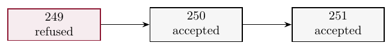
Empty and one
Testing only ordinary successful inputs is a common mistake. A comparison can work in the middle of a range and be wrong at its edge. For an inclusive range, check both end values and values just inside and outside each end.
Collections have boundaries too. Check an empty order, an order with one item, and an order with several items. An empty total loop executes no iterations and should return 0. One item checks that the first entry is included. Several items check that the loop keeps adding rather than returning too early.
Practice
3.1 A card has 250 cents and the fare is 250. Another card has 249 cents. Classify a tap on each card as positive or negative, and say whether either is also a boundary test.
3.2 A method accepts ages from 12 to 65 inclusive. Choose values at each end and just inside and outside each end. State which values should be accepted.
3.3 A fresh order is empty. Predict its total, then predict its total after one cookie is added. Explain which loop boundary each case checks.
4. Cards Part 1: Tests
The problem
Do this part at home. The supplied TransitCard stores balance and trips. A new card starts with 500 cents and no trips. A fare is 250. The constructor requires a non-negative balance. All amounts and counts fit in an int. The class compiles but has two logical errors.
tapOn() must accept an exact fare, deduct the fare and count one trip. A refused tap changes neither field. topUp(amount) refuses zero or negative amounts; a positive amount adds credit. newMonth() should clear the trip count and keep the credit. The getters return their fields.
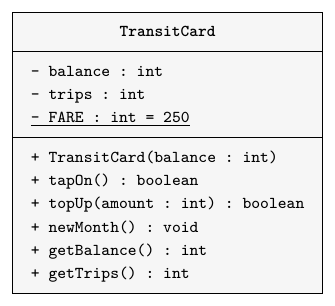
The supplied class
public class TransitCard
{
private static final int FARE = 250;
private int balance;
private int trips;
public TransitCard(int balance)
{
this.balance = balance;
trips = 0;
}
public boolean tapOn()
{
if(balance > FARE) {
balance -= FARE;
trips++;
return true;
}
return false;
}
public boolean topUp(int amount)
{
if(amount <= 0) {
return false;
}
balance += amount;
return true;
}
public void newMonth()
{
// Keep the credit for the new month.
}
public int getBalance()
{
return balance;
}
public int getTrips()
{
return trips;
}
}The checks to write
Write TransitCardTest with a private static failures field starting at 0. Add assertEquals(String label, int expected, int actual), assertTrue(String label, boolean condition) and testTaps(). Both assertion helpers print PASS or FAIL with the label, count failures and keep going. For unequal ints, print the expected and actual values too. main runs the test and prints All tests passed only when the count is 0. Otherwise it prints the failure count. Use one card for these successive checks.
| Label | What to call or read | Expected result |
|---|---|---|
| first tap | tapOn() | true |
| after first | getBalance() | 250 |
| exact fare | tapOn() | true |
| after second | getBalance() | 0 |
| third refused | tapOn() | false |
| after third | getBalance() | 0 |
| negative top-up | topUp(-100) | false |
| after refusal | getBalance() | 0 |
The first tap is positive, the second is at the boundary, and the third should be refused. With the supplied class, the boundary test fails. Find and repair the line in tapOn that refuses the exact fare, then rerun all eight checks. Keep the month-reset behaviour for Part 2.
Practice
4.1 Write the test program and repair the fare fault. Run the same checks before and after the repair. Use additional paper or an IDE for the complete implementation.
Output before the fare repair
PASS first tap PASS after first FAIL exact fare FAIL after second: expected 0, actual 250 PASS third refused FAIL after third: expected 0, actual 250 PASS negative top-up FAIL after refusal: expected 0, actual 250 Failures: 4
Output after the fare repair
PASS first tap PASS after first PASS exact fare PASS after second PASS third refused PASS after third PASS negative top-up PASS after refusal All tests passed
Repair the fare comparison in the card box. Write the test class in the second box. Each box includes a finished copy of the other class. The card check also tries balances 249, 250 and 251, zero and positive top-ups, and fields that must stay unchanged after refusal.
5. Test programs
Repeated checks and fixtures
A test program runs test cases and checks their results automatically. After a change, run the same program again. The program repeats the earlier calls and comparisons, so we do not have to reconstruct them from memory. A regression test checks behaviour that worked before a change. Keep earlier tests while adding checks for a new feature or a repaired fault.
A fixture is a set of objects in a known state used by tests. Our makeTill() helper creates a fresh till and starts an empty order. Tests share the setup code, not the changed object. A later test therefore cannot inherit the items left by an earlier test.
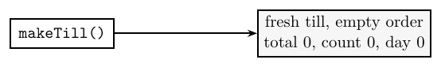
The till and its first-order tests
Till keeps a current order total, an item count and a day total. Start an order, ring up its items, and finish it once before starting another. The class relies on this sequence; it has no order-open flag. Menu prices are Coffee 250, Tea 200, Muffin 325 and Cookie 175. The MenuItem getter getPriceInCents() supplies a price; Menu.COFFEE and the other menu constants refer to those items. The till below has a reset fault.
public class Till
{
private int runningTotal;
private int itemCount;
private int dayTotal;
public Till()
{
runningTotal = 0;
itemCount = 0;
dayTotal = 0;
}
public void startOrder()
{
runningTotal = 0;
}
public void ringUp(MenuItem item)
{
runningTotal += item.getPriceInCents();
itemCount++;
}
public void finishOrder()
{
dayTotal += runningTotal;
}
public int getRunningTotal()
{
return runningTotal;
}
public int getItemCount()
{
return itemCount;
}
public int getDayTotal()
{
return dayTotal;
}
public void reportState()
{
System.out.println("runningTotal=" + runningTotal
+ " itemCount=" + itemCount
+ " dayTotal=" + dayTotal);
}
}The complete test program below checks an empty order, one item, two items and a finished order. The assertion helpers use ordinary if statements. They report each failure and continue. Success is printed only when the failure count is 0. Run each test program in a fresh process so its count starts at 0.
public class TillTest
{
private static int failures = 0;
public static void main(String[] args)
{
testFirstOrder();
if(failures == 0) {
System.out.println("All tests passed");
}
else {
System.out.println("Failures: " + failures);
}
}
private static Till makeTill()
{
Till till = new Till();
till.startOrder();
return till;
}
private static void testFirstOrder()
{
Till till = makeTill();
assertEquals("empty count", 0,
till.getItemCount());
till.ringUp(Menu.COFFEE);
assertEquals("one item", 1,
till.getItemCount());
till.ringUp(Menu.MUFFIN);
assertEquals("order total", 575,
till.getRunningTotal());
assertEquals("two items", 2,
till.getItemCount());
assertTrue("paid order",
till.getRunningTotal() > 0);
till.finishOrder();
assertEquals("day total", 575,
till.getDayTotal());
}
private static void assertEquals(String label,
int expected, int actual)
{
if(expected == actual) {
System.out.println("PASS " + label);
}
else {
failures++;
System.out.println("FAIL " + label
+ ": expected " + expected
+ ", actual " + actual);
}
}
private static void assertTrue(String label,
boolean condition)
{
if(condition) {
System.out.println("PASS " + label);
}
else {
failures++;
System.out.println("FAIL " + label);
}
}
}Checks and tools
These first-order checks all pass, even though the till is faulty. They never start a second order on the same object. A program that merely calls methods and prints All tests passed would check even less: without comparisons, it cannot detect a wrong returned value.
JUnit is a library for running tests. You may meet its test classes and assertion methods later. The ordinary Java programs here already teach the ideas of test cases, assertions and fixtures; no JUnit library is required.
The method below prints a message without comparing any result.
public static void main(String[] args)
{
Till till = new Till();
till.startOrder();
till.ringUp(Menu.COFFEE);
System.out.println("All tests passed");
}This picture shows the spelling of a JUnit test, with its order already prepared.
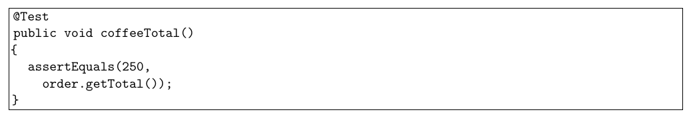
The assertion compares a known expected value with the method's result. Our ordinary Java helpers make the same kind of comparison. An assertion checks a particular claim; it does not establish every other property of the object. A total can be right while an item count is wrong.
Practice
5.1 A test method reads a total and prints All tests passed, but never compares the total with anything. What evidence does that success message provide about whether the total includes every ordered item at the correct price?
5.2 Two tests each call makeTill(). The first rings up a muffin. What item count should the second test see before ringing up anything, and why?
5.3 A maintainer prints All tests passed after every run, even when failures is nonzero. Write the conditional report that belongs at the end of main.
Complete the report method. Its checking program calls it with zero failures and with two failures.
6. Finding the cause
Promises and reproduction
A contract states what callers may supply and what a method promises in return. For Till, callers supply non-null menu items. They start an order, ring up its items and finish it once. All totals fit in an int. startOrder resets the current total and item count but preserves the day total. ringUp adds one item's price and counts one item. finishOrder adds the current total to the day total.
Agree on these promises in the public interface before implementing the separate parts. A test compares the observed behaviour with the promise. When a report is vague, first find a short sequence that reproduces the failure. Record its starting state and inputs so each investigation begins the same way.
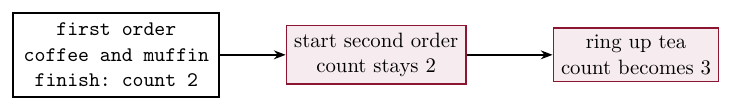
The second order contains one tea, but its reported count is 3. The increment in ringUp is correct: one new item adds one. The count was already wrong before that call. Follow the state back to the first disagreement with the contract instead of changing the line where the symptom appeared.
Practice
6.1 For startOrder(), identify what the caller must have finished first, what two fields must be cleared, and what field must be preserved.
6.2 A customer reports a wrong count only on the second order. Why is testing a new till with one tea insufficient to reproduce that report? Give the extra history the test needs.
7. Tracing state
Walkthroughs and state tables
A manual walkthrough follows the code line by line while recording fields. Begin with known values and apply each assignment in order. A state table has one row per call and one column per field. It separates what a method changed from what it left alone. The values below come from the faulty till's trace.
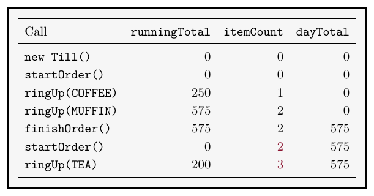
The first wrong row is the second startOrder. The total becomes 0 as promised, but the item count stays at 2. The day total correctly stays at 575. A verbal walkthrough explains each change aloud, to a person or a rubber duck. Saying why each field should change can reveal a missing assignment.
Printed traces and debuggers
reportState() prints every field together. Put a call label before the values so the trace shows which operation just finished. Use the shortest sequence that reproduces the fault; too much output can hide the first wrong value. A boolean field can switch the trace on and off.
// Inside the trace class, not inside Till.
private boolean debugging = true;
private void show(String call, Till till)
{
if(debugging) {
System.out.print(call + " ");
till.reportState();
}
}A debugger can pause at a breakpoint so you can inspect the fields. Stepping runs one step at a time; step into follows a called method. The call sequence shows how execution reached the current method. A printed trace and a state table are enough for these examples. Keep assertions after the investigation so future changes can be checked automatically.
Practice
7.1 Use the faulty Till from Section 5. It completes an order containing one coffee, starts another order, then rings up one cookie. Fill in the table.
| Call | runningTotal | itemCount | dayTotal |
|---|---|---|---|
startOrder() | |||
ringUp(COFFEE) | |||
finishOrder() | |||
startOrder() | |||
ringUp(COOKIE) |
7.2 In your table for 7.1, identify the first wrong row. Explain why changing the increment in ringUp would address the symptom rather than the cause.
7.3 A trace prints thousands of lines from unrelated objects. Describe one way to narrow the output while preserving the call sequence needed for the failure.
8. Repairs
The cause and the regression case
The till's reset must clear both current-order fields. Repair the method whose promise was broken, then run the two-order sequence again. The day total must survive that repair. Clearing every field would remove the stale count but also lose the money already taken.
public void startOrder()
{
runningTotal = 0;
itemCount = 0;
}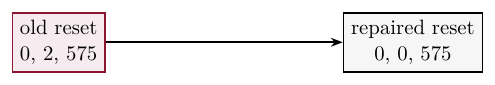
Extend TillTest with testNextOrder. Complete the coffee and muffin order, start a second order, check total 0, count 0 and day total 575, then ring up tea and check count 1. Against the old class the reset-count and tea-count checks fail; against the repaired class all ten checks pass.
Choose a technique for the question you need to answer. Use an assertion for a known expected value, a state table for a sequence of field changes, and a short printed trace or debugger pause to inspect a value. Use the observations to locate the cause. After the repair, keep the regression case and rerun the existing tests after every change. Passing tests give evidence only for the cases they actually check.
Practice
8.1 A proposed till repair sets all three fields to 0 in startOrder. After a first order of 575, what assertion would reject that repair when the second order starts?
Use the label "day total kept" in this answer box.
| Assertion |
|---|
8.2 A one-order test passes, but customers report a wrong second-order count. Choose what to keep as the regression test after debugging, and explain why repeating only the passing one-order test would be insufficient.
9. Cards Part 2: Debugging
The problem
Extend Part 1 at home. Keep the repaired fare comparison and every earlier test. Repair newMonth() and add reportState(), both in red. reportState() prints the current balance and trips as one line without changing them. testNewMonth() uses a fresh card with 500, taps once, checks trips 1, then calls newMonth and checks trips 0 and balance 250. Call it from main, after testTaps.
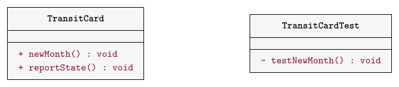
Write TransitCardDemo.main. It uses another card with 500, reports the initial state, prints each of three tap results and reports state after each tap. Finally it calls newMonth and reports the state. The faulty month method gives this trace after the fare fix:
| Call | balance | trips |
|---|---|---|
| new card | 500 | 0 |
| first tap, true | 250 | 1 |
| second tap, true | 0 | 2 |
| third tap, false | 0 | 2 |
newMonth | 0 | 2 |
Compare each row with the method's promise. Find the first wrong row, repair its cause, then rerun all eleven checks. The demo and the regression test use separate cards and different call sequences. Their final balances and trip counts can differ. Keep the new test after the repair.
Practice
9.1 Add the state report, demo and regression test, trace the faulty month reset, and repair it. Run the tests before and after the repair. Use additional paper or an IDE for the complete implementation.
Demo before the month repair
new card balance=500 trips=0 first tap: true balance=250 trips=1 second tap: true balance=0 trips=2 third tap: false balance=0 trips=2 new month balance=0 trips=2
Demo after the month repair
new card balance=500 trips=0 first tap: true balance=250 trips=1 second tap: true balance=0 trips=2 third tap: false balance=0 trips=2 new month balance=0 trips=0
Before the repair the new-month assertion reports expected 0, actual 1. After the repair all eleven checks pass. The earlier fare checks are still part of the same test program.
The card box starts with the fare repair already made. Repair the month reset and add the state report. In the test box, keep the eight earlier checks and add the three month checks. The demo has a separate card. The hidden card check also tries a reset before any trip, a repeated reset and a tap after a reset.
10. Review
Evidence and technique
Testing and debugging answer different questions. A failing assertion shows a mismatch for a particular starting state and call sequence. A trace helps locate the assignment or missing assignment that caused it. The public contract provides the intended behaviour for both activities.
For each repair, keep the failure sequence as a test. Include the state that must be preserved, not only the field that was wrong. For example, a month reset must clear trips while preserving credit. A till reset must clear the current order while preserving the day total. A repair can remove one symptom and break another promise, which is why earlier tests still need to run. Related classes can also repeat fields and methods. Chapter 12 introduces inheritance as a way for related classes to share code.
Reading a failure
A failed assertion reports a claim that did not hold. Read its label first, then distinguish the expected value from the actual value. The expected value comes from the contract and the inputs; the actual value comes from running the code. For example, the extended till tests report this line against the faulty class:
FAIL reset count: expected 0, actual 2
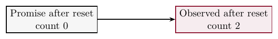
Changing the expected value to 2 would accept the old count rather than repairing the method. First check that the test follows the caller's part of the contract. Then follow the state to find the first wrong change. The label identifies the failed check; it does not by itself identify the source line that caused the failure.
Keep a fresh starting fixture for each independent test, but keep the same object for the calls within a history-dependent test case. A case that tests two orders must complete both on one till. Starting a new object for every order would prevent the old count from reaching the second order. Fresh setup and testing reuse are compatible: the fresh object is the start of the whole case, not a replacement between every pair of calls.
Practice
10.1 A card starts at 500, taps once and receives a top-up of 100. Predict balance and trips. A top-up of -100 is then refused. What must stay unchanged?
10.2 A suite has twenty passing tests. A report describes a call sequence that none of them runs. Does the passing suite settle that report? Explain the next useful check.
10.3 You know the expected total but do not know which assignment first makes the item count wrong. Choose one technique to check the total and another to locate the first wrong state.
10.4 A repair changes the output to match one example. What must you do before accepting it as a repair of the method's contract?
11. Complete Java Programs
Read and run these two complete programs after class, then write their extensions. Use additional paper or an IDE for the complete implementation. Compare each program's output with the expected output before changing its classes. Use small integers whose arithmetic fits in an int.
Program A: Thermostat tests
A thermostat stores a target temperature. Its public contract defines both the valid range and what happens when a request is refused.
Thermostat()starts with privatetargetequal to 20.getTarget()returns it.setTarget(int target)accepts 10 to 30 inclusive, stores the requested value and returns true. Otherwise it returns false and preserves the old target.ThermostatTestuses the same two assertion helpers as the till and card tests. It checks an ordinary request at 22, then requests 9, 10, 30 and 31 in that order, checking both the returned result and the target after each request.- The two limits are valid. Values just outside them are refused. The suite prints All tests passed only if its failure count is 0.
/**
* A target temperature between 10 and 30 inclusive.
*/
public class Thermostat
{
private int target;
/** Start at 20 degrees. */
public Thermostat()
{
target = 20;
}
/**
* Refuse an invalid target without changing the
* old one.
*/
public boolean setTarget(int target)
{
if(target < 10 || target > 30) {
return false;
}
this.target = target;
return true;
}
public int getTarget()
{
return target;
}
}/** Check ordinary, refused and boundary requests. */
public class ThermostatTest
{
private static int failures = 0;
public static void main(String[] args)
{
testTargets();
if(failures == 0) {
System.out.println("All tests passed");
}
else {
System.out.println("Failures: " + failures);
}
}
/**
* Each assertion uses the promised target, not
* observed output.
*/
private static void testTargets()
{
Thermostat heat = new Thermostat();
assertTrue("normal 22", heat.setTarget(22));
assertEquals("target 22", 22, heat.getTarget());
assertTrue("refuse 9", !heat.setTarget(9));
assertEquals("keep 22", 22, heat.getTarget());
assertTrue("lower 10", heat.setTarget(10));
assertEquals("target 10", 10, heat.getTarget());
assertTrue("upper 30", heat.setTarget(30));
assertEquals("target 30", 30, heat.getTarget());
assertTrue("refuse 31", !heat.setTarget(31));
assertEquals("keep 30", 30, heat.getTarget());
}
private static void assertEquals(String label,
int expected, int actual)
{
if(expected == actual) {
System.out.println("PASS " + label);
}
else {
failures++;
System.out.println("FAIL " + label
+ ": expected " + expected
+ ", actual " + actual);
}
}
private static void assertTrue(String label,
boolean condition)
{
if(condition) {
System.out.println("PASS " + label);
}
else {
failures++;
System.out.println("FAIL " + label);
}
}
}Expected output
PASS normal 22 PASS target 22 PASS refuse 9 PASS keep 22 PASS lower 10 PASS target 10 PASS upper 30 PASS target 30 PASS refuse 31 PASS keep 30 All tests passed
Complete the supplied classes in the live boxes. The thermostat check includes both limits and their outside neighbours; the test-program box runs the ten checks shown above.
ThermostatThermostatTestPractice
11.1 Add testReturnToLowerBound() to the test class. Use a fresh thermostat, set its target to 30, then request 10. Check that the request succeeds and the final target is 10. Call the new test from main. Use additional paper or an IDE for the complete implementation.
Extend the full test class and call the new method from its main method.
11.2 Suppose setTarget returns false for 31 but stores 31 anyway. Which existing assertion catches this error, and why would the return-value check alone miss it?
Program B: Scoreboard reset
A scoreboard stores points and rounds for one game. This version contains a reset fault. Use its trace to locate the fault before writing the regression case.
ScoreBoard()sets both fields to 0.recordRound(int points)adds a non-negative score and increments rounds once. The getters return the two fields.reset()promises a fresh game with both fields 0.reportState()prints the two fields and changes neither.- The demo reports a new scoreboard, records 7 then 5, reports after each, resets and reports, then records 3 and reports again. It uses the same object throughout.
/** Points and number of rounds for one game. */
public class ScoreBoard
{
private int points;
private int rounds;
public ScoreBoard()
{
points = 0;
rounds = 0;
}
/**
* Add a non-negative score. Totals must fit in
* an int.
*/
public void recordRound(int points)
{
this.points += points;
rounds++;
}
/** Start a fresh game. */
public void reset()
{
points = 0;
}
public int getPoints()
{
return points;
}
public int getRounds()
{
return rounds;
}
/** Print the two fields without changing them. */
public void reportState()
{
System.out.println("points=" + points
+ " rounds=" + rounds);
}
}/** Trace two games on the same scoreboard. */
public class ScoreBoardDemo
{
public static void main(String[] args)
{
ScoreBoard board = new ScoreBoard();
board.reportState();
board.recordRound(7);
board.reportState();
board.recordRound(5);
board.reportState();
board.reset();
board.reportState();
board.recordRound(3);
board.reportState();
}
}Output of the supplied program
points=0 rounds=0 points=7 rounds=1 points=12 rounds=2 points=0 rounds=2 points=3 rounds=3
ScoreBoardDemoThe supplied faulty scoreboard is available in this box. Reproduce its five state reports.
11.3 Repair reset() and give the corrected state table for the demo sequence. Check both the new game's first round and the reset itself. Use additional paper or an IDE for the complete implementation.
Repair the supplied class. The checking program also resets a fresh scoreboard, repeats a reset and records a zero-point round.
| Call | points | rounds |
|---|---|---|
| new scoreboard | ||
| record 7 | ||
| record 5 | ||
| reset | ||
| record 3 |
11.4 Write ScoreBoardTest with a testFreshGame() method. Repeat the two-round first game, reset, then a new round of 3. Check reset points 0, reset rounds 0, new points 3 and new rounds 1. Count failures and keep going. Run this test against the faulty and repaired classes. Use additional paper or an IDE for the complete implementation.
The box includes the repaired scoreboard. Run the same test in your IDE against the supplied faulty class to see the two failing round-count checks.
Lecture summary
A program can compile and run while giving the wrong answer. The cafe receipt lists coffee, a muffin and a cookie, but charges only 575 cents. The prices add to 750. Testing detects the wrong total; debugging follows the calculation to its cause.
Testing
- A syntax error breaks a language rule and can stop compilation. A logical error lets the program compile and run, but gives the wrong behaviour. The compiler cannot decide whether a legal calculation follows the intended price rule.
- Testing checks whether code produces the intended behaviour. Debugging finds and fixes the cause of an error. The wrong total is a symptom; its cause may be in a different part of the calculation.
- A test case gives the starting state, the inputs and the expected result. Work out the expected result from the contract and input data before running the code. Copying the observed result into a test can preserve a mistake.
- A unit test checks one method or class at a time. For an order containing coffee and a muffin, compare
getTotal()with 575. Two coffees should contribute twice, for a total of 500.
Assertions and edges
- An assertion states a condition that a test expects to be true. Our ordinary Java
assertEquals(label, expected, actual)compares two ints.assertTrue(label, condition)checks a boolean. Both print a labelled PASS or FAIL, count failures and keep going. - An exact integer comparison checks more than a condition such as "the total is positive". Many incorrect totals are positive. Choose a condition that checks the method's promise.
- A positive test checks a case that should succeed. A negative test checks that an invalid operation is refused in the specified way. Check the return value and every field that must stay unchanged.
- A boundary test checks an edge and values just inside or outside it. For a fare of 250, try balances 249, 250 and 251. Exactly 250 should succeed, so that case is both positive and at the boundary.
- For an inclusive range, test both end values and their neighbours. Collections also have edges: an empty order checks zero loop iterations, one item checks the first visit, and several items check that the loop keeps adding.
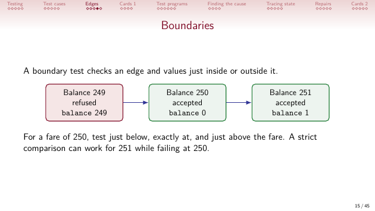
Test programs and fixtures
- A test program runs test cases and checks their results automatically. It reports success only when the failure count is zero. A success message without comparisons says only that execution reached the print statement.
- A fixture is a set of objects in a known state used by tests.
makeTill()creates a fresh till and starts an empty order. Sharing the setup method gives each independent test its own object. - Within a case that checks reuse, keep the same object throughout the call sequence. Creating a new till for each order would hide a count left over from the previous order.
- A regression test checks behaviour that worked before a change. Keep earlier tests, add the case that exposed a fault, and rerun them after a repair. Passing tests provide evidence for the cases they actually check.
Contracts and state
- A contract states what callers may supply and what a method promises in return. The till caller starts an order, rings up its items and finishes it once before starting another. Items are non-null and totals fit in an
int. startOrder()clearsrunningTotalanditemCount, and preservesdayTotal.ringUpadds one price and counts one item.finishOrder()adds the current total to the day total.- A state table has one row per call and one column per field. A manual walkthrough applies assignments in order. Find the first row that disagrees with the contract, including fields that should have stayed unchanged.
- After coffee and a muffin, the faulty till has total 575, count 2 and day total 575. The second
startOrder()changes the total to 0 but leaves count 2. Adding tea then makes count 3. The increment is correct; the reset omitted an assignment. - The repair clears the count as well as the current total. Clearing the day total too would break another promise. The two-order regression case checks total 0, count 0 and day total 575 after the reset, then count 1 after tea.
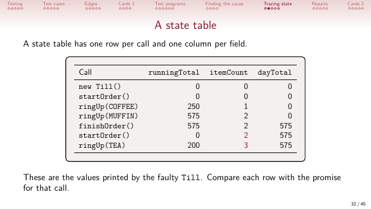
Debugging techniques
- Start with a short sequence that reproduces the reported failure. Record its starting state and inputs so each investigation begins in the same way.
reportState()prints all relevant fields together. Put the call label before the values. A boolean flag can enable a short trace while suppressing unrelated output.- A debugger can pause at a breakpoint so you can inspect fields. Stepping runs one step at a time; step into follows a called method. A verbal walkthrough explains each change aloud.
- Use an assertion for a known expected value, a state table for a sequence of changes, and a short trace or debugger pause to inspect values. Keep assertions after the investigation so later changes can be checked automatically.
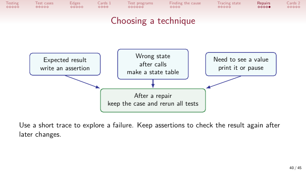
Cards and complete programs
TransitCard.tapOn()accepts an exact fare. Starting at 500, two successful taps leave balances 250 then 0, with trips 1 then 2. A third tap is refused and changes neither field. Zero and negative top-ups are refused too.- Part 1 writes the eight tap and top-up checks and repairs the fare comparison. Part 2 repairs the existing
newMonth(), addsreportState()and keeps a month regression test. A month reset clears trips and preserves credit. - The month test uses a fresh 500-cent card and one tap before resetting: balance stays 250 and trips becomes 0. The separate demo taps three times before resetting, so its final balance and trips are both 0.
Thermostat.setTargetaccepts 10 to 30 inclusive. The tests check an ordinary request at 22, both limits, and refusals at 9 and 31. A refusal must preserve the previous target as well as return false.ScoreBoard.reset()must clear both points and rounds. Its regression case records 7 then 5, resets, and records 3. Check both fields after the reset and after the new game's first round.